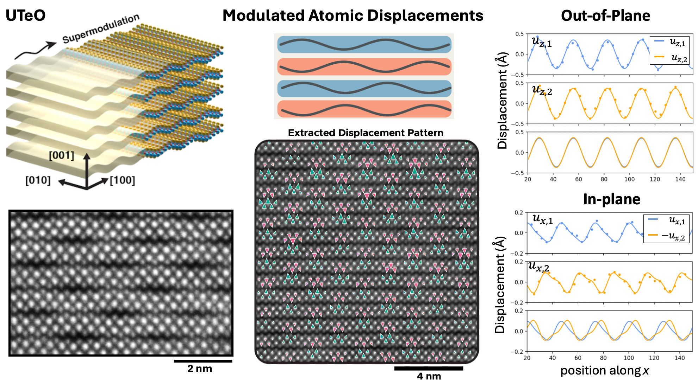

Precise tracking of atomic positions using scanning transmission electron microscopy (STEM) revealed a structural supermodulation in UOTe. Further analysis resolved the detailed pattern of atomic distortions and showed that they break key symmetries, enabling control of quantum geometry.

This effort, led by former postdoctoral researcher Suk Hyun Sung (now at the University of Michigan), developed and applied new methods to extract modulated atomic positions from STEM data. The resulting maps revealed not only the prominent supermodulation—corrugations, or “wiggles”—but also higher-order harmonics and phase shifts that break inversion symmetry.
This work was carried out in collaboration with Thao Dinh and Su-Yang Xu (Harvard) and many others.
Read the paper: A chiral superlattice route to spin-split topological antiferromagnetism.